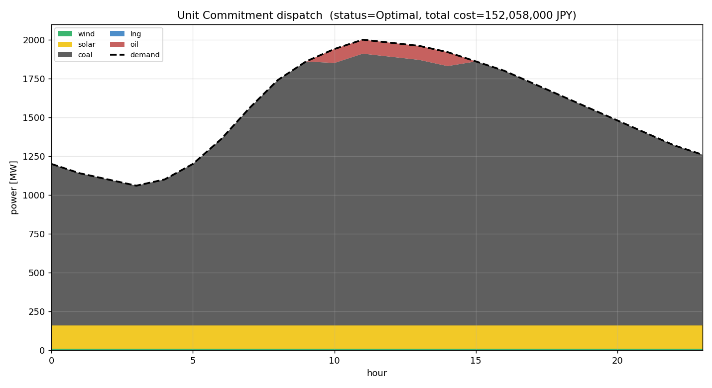

OpenStreetMap 由来・外部データで検証した日本全国の送電網モデル（50/60 Hz）。 MATPOWER の潮流計算と、Excel で発電機を設定して解くユニットコミットメント(UC)が そのまま回る自己完結バンドルを配布しています（リポジトリを clone しなくても動きます）。
2 つのプロファイル。まずは core で十分です。zip 内に SHA256 の MANIFEST を同梱しています。
.mat＋CSV）src/config 同梱.mat/.npz/CSV）# zip を展開してディレクトリに入る unzip all-japan-grid-dataset-v1.7.0-core.zip && cd all-japan-grid-dataset-v1.7.0-core pip install -r requirements.txt # pandapower, pulp, openpyxl, scipy, matplotlib ほか
展開したバンドルの中で以下を実行するだけ。
配布ケースを読み、AC 潮流（Newton–Raphson）を解きます。MATLAB 不要。
python dataset/01_matpower_powerflow/solve_pf.py okinawa # → AC 収束・損失 1.4%・Vm 0.985–1.010
MATLAB＋MATPOWER で同じケースを解きます。多成分島も正しく求解。
% 先に addpath で MATPOWER を通す addpath(genpath('/path/to/matpower8.1')); solve_pf('okinawa') % or 'hokkaido' / 'east' / 'west'
発電機と需要を Excel で編集し、24h の最小コスト起動停止計画を解きます。
python dataset/02_uc_from_excel/make_template.py # Excel 生成 # → generators_template.xlsx を編集 python dataset/02_uc_from_excel/run_uc.py # 解いて xlsx/png 出力

引用・再配布の際は必ず確認してください。
| 対象 | ライセンス |
|---|---|
| 送電網トポロジ（OSM 由来） | ODbL-1.0 © OpenStreetMap contributors |
| 発電容量の出典DB（Wikipedia 由来値を含む） | CC-BY-SA-4.0 |
| WRI 全球発電所DB（クロスチェック） | CC-BY-4.0 |
| コード | リポジトリ LICENSE を参照 |
引用は CITATION.cff ／ datapackage.json、 データ辞書は DATA_DICTIONARY.md。
これはモデルであり実系統そのものではありません。使う前に押さえてください。
from_mpc）は複数 slack を正しく変換できず損失が負になる等の不整合が出ます
（配布 .mat 自体は健全）。Python で大規模島を扱うなら MATLAB 版か UC→潮流連成を使ってください。